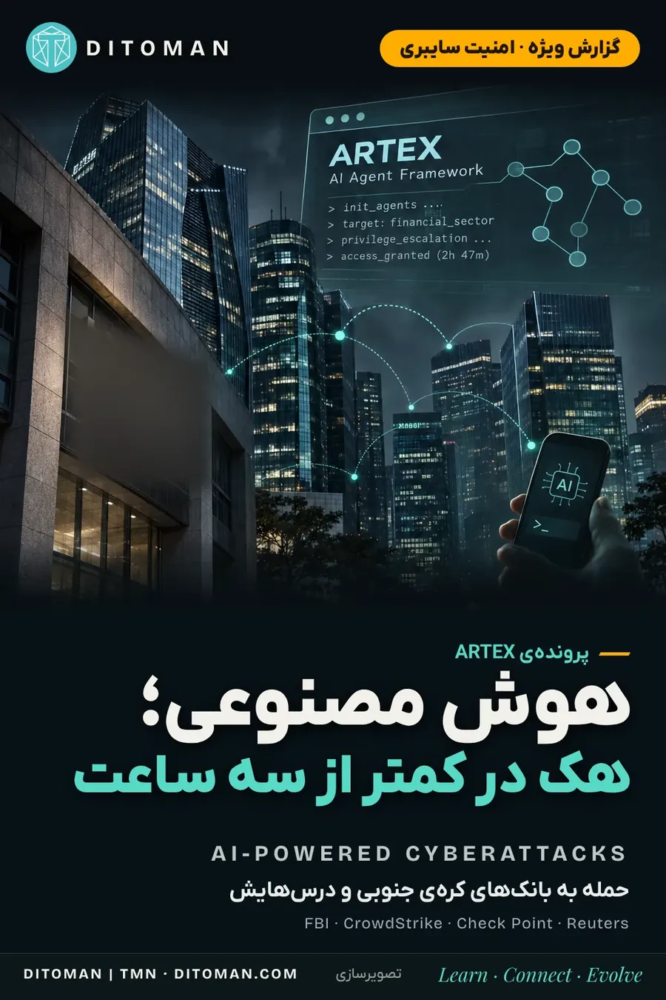
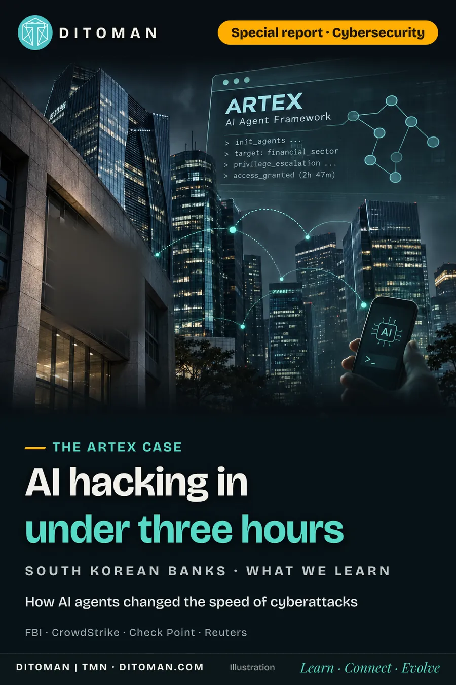

هوش مصنوعی؛ هک در کمتر از سه ساعت: پروندهی ARTEX و حمله به بانکهای کرهی جنوبی
AI hacking in under three hours: the ARTEX case and the attacks on South Korean banks
یک ابزار آزمایش امنیت، در حملهی واقعی به کار رفت. چه ثابت شده، چه هنوز نه، و مردم و شرکتها چه درسی بگیرند؟
A security-testing tool was used in real attacks. What is proven, what is not, and what individuals and companies should learn?
1. چه اتفاقی افتاد؟
از اواخر سپتامبر ۲۰۲۶، چند مؤسسهی مالی کرهی جنوبی با نفوذ غیرمجاز و افشای اطلاعات مشتریان روبهرو شدند. شرکتهای امنیتی بعداً نشانههایی از یک ابزار به نام ARTEX در زیرساخت مهاجم پیدا کردند: ابزاری که برای آزمایش امنیت ساخته شده بود و حالا در حملهی واقعی به کار رفته بود.
خبر مهمتر از «چینی بودن نرمافزار» یا «هک با آیفون» است. نکته این است که عاملهای هوش مصنوعی حالا میتوانند چند مرحلهی نفوذ را پشت سر هم و تقریباً خودکار انجام دهند، و این یعنی سرعت حمله بالا رفته است.
این گزارش فقط به آنچه منابع معتبر تأیید کردهاند تکیه میکند و جدا میکند چه چیزی اثبات شده و چه چیزی هنوز در دست بررسی است.
2. ARTEX چیست؟
ARTEX یک چارچوب متنباز در چین است که چند «عامل» هوش مصنوعی را هماهنگ میکند تا آزمایش نفوذ را خودکار کنند. خودش مدل هوش مصنوعی نیست؛ به مدلهای زبانی بیرونی وصل میشود.
آزمایش نفوذ یعنی یک متخصص با اجازهی صاحب سیستم تلاش میکند راه ورود غیرمجاز را پیدا کند تا پیش از مهاجم واقعی، ضعفها بسته شوند. تفاوت ابزار جدید با روش سنتی این است:
| روش سنتی | عامل هوش مصنوعی | |
|---|---|---|
| شناسایی هدف | کارشناس دستی بررسی میکند | عامل خودش اطلاعات جمع میکند |
| انتخاب مرحلهی بعد | کارشناس تصمیم میگیرد | نرمافزار بر اساس نتیجه تصمیم میگیرد |
| سرعت | ساعتها تا روزها | چند مرحلهی پیوسته در زمان کوتاه |
| مستندسازی | دستی | خودکار |
همین قابلیت دو لبه دارد: برای مدافعان، آزمایش امنیتی ارزانتر و سریعتر میشود؛ برای مهاجمان، مهارت فنی کمتری لازم است.
3. خط زمانی
| تاریخ | رویداد |
|---|---|
| اواخر سپتامبر ۲۰۲۶ | شروع نفوذ به مؤسسات مالی کرهی جنوبی. یک بانک در سرویس استعلام وام برای کارگزاران و بانکی دیگر در سامانهی موبایلی پشتیبانی کارکنان نفوذ شده بود |
| ۷ اکتبر | CrowdStrike گزارش داد از ARTEX و مدلهای هوش مصنوعی در این کارزار استفاده شده است |
| ۸ اکتبر | سازندهی ARTEX اعلام کرد پروژه بسته (closed source) میشود و صفحهی گیتهاب برداشته شد |
| ۵ نوامبر | Check Point گزارش داد مجرمان دیگر هم از ARTEX استفاده میکنند |
| ۱۳ نوامبر | هشدار رسمی FBI دربارهی ARTEX منتشر شد |
4. «کمتر از سه ساعت» یعنی چه؟
بنا بر هشدار FBI (که رسانهها گزارش کردهاند)، بعضی نفوذهای مرتبط با ARTEX از لحظهی هدفگیری تا دسترسی با امتیاز بالا کمتر از سه ساعت طول کشیدهاند. دسترسی با امتیاز بالا یعنی مهاجم به حساب یا بخشی از سیستم برسد که اختیارات بیشتری از کاربر عادی دارد.
این عدد نشان نمیدهد هر بانک ظرف سه ساعت هک میشود. نمونهای از سرعت بعضی حملههاست و خطر واقعی همین است: وقتی حمله سریع باشد، فرصت واکنش انسانی کم میشود.
FBI همچنین گفته در اوایل نوامبر بیش از ۱۶۰۰ کنسول ARTEX از اینترنت در دسترس بوده است. این عدد شمار حملههای موفق نیست؛ نشان میدهد ابزار چقدر پخش شده و FBI میگوید شمار واقعی احتمالاً بیشتر است، چون سامانههای خصوصی دیده نمیشوند.
5. چه کسانی و چه چیزی هدف بود؟
- FBI از سرقت اطلاعات شخصی حدود ۶۷ هزار نفر در حمله به مؤسسات مالی کرهی جنوبی خبر داده است. Recorded Future با تکیه بر گزارشهای عمومی از دستکم ۶۸ هزار نفر در دستکم هفت مؤسسه نوشته
- رویترز نوشته دستکم نه بانک کرهای از اواخر سپتامبر هدف یا قربانی شدهاند. پلیس و سازمان نظارت مالی تحقیق را شروع کردهاند
- در گزارشها از Shinhan، KB Kookmin و Hana نام برده شده است، اما این اسامی بخشی از یک سلسله افشاگریاند و هر رخداد را نمیتوان قطعاً به یک مهاجم نسبت داد
- نفوذ لزوماً به هستهی بانکداری نبود؛ سامانههای جانبی هدف بودند
سه نکته را باید جدا نگه داشت: افشای اطلاعات شخصی با سرقت پول از حساب فرق دارد؛ هدف قرار گرفتن بانک به معنی موفقیت مهاجم نیست؛ و تعداد قربانیان در منابع مختلف اندکی متفاوت است.
6. ARTEX دست مجرمان دیگر
Check Point در گزارش ۵ نوامبر سه کارزار دیگر را بررسی کرد. نکتهی آموزشی این بخش، هم توانایی عاملها و هم خطاهایشان است:
- گواهیهای امضای برنامهی iOS: عاملها بیش از ۳۰۰ گواهی و رمز به دست آوردند، اما فقط ۳ مورد از فهرست اعتبارسنجی گذشت
- بازارهای حساب بازی: از ۱۳ بازار، بیش از ۱۹۰ هزار مشخصات ورود به دست آمد. نمونهگیری نشان داد حدود ۳٫۳٪ هنوز معتبر است، یعنی حدود ۶ هزار حساب. Check Point تأکید میکند این برآورد است، نه شمارش تأییدشده
- ۲۹۲ دامنهی مرتبط با رمزارز: عاملها پایگاهداده و API ناامن پیدا کردند. مالک سایت فایل دستکاریشده را به حالت اولیه برگرداند و Check Point ندید پولی به کیف پول مهاجم برسد
نکتهی جالب: بعضی «موفقیتهای برداشت پول» که عاملها گزارش دادند، توهم بود و فقط بر اساس پاسخ موفق یک API ساخته شده بود. یعنی عاملهای هوش مصنوعی هنوز اشتباه میکنند، اما اشتباهشان جلوی حمله را نمیگیرد.
7. نقش مدلهای هوش مصنوعی
ARTEX خودش مدل نیست و به مدلهای بیرونی وصل میشود. بنا بر CrowdStrike، در نمونهی کرهی جنوبی مدل اصلی DeepSeek v4.1-flash بود و در بخشی از جلسات، GLM-5.3 و Grok 4.6 از طریق Claude Code به کار رفتند. در پروندههای مهاجم، تاریخچهی جلسههای Claude Code هم پیدا شد. Check Point هم نوشته در ده نمونهی بررسیشده مدلهای چینی، بهویژه خانوادهی DeepSeek Flash، غالب بودند و تأکید کرده این مشاهده مقایسهی کلی ایمنی مدلها نیست.
نکتهی مهمتر برای آینده: Check Point میگوید مهاجمان وقتی مدلی جلوی درخواستشان را میگرفت، به مدل دیگری میرفتند. یعنی ایمنی یک مدل بهتنهایی کافی نیست؛ اکوسیستم کامل (ابزارها، مدلهای باز، سرویسهای واسط) مهم است.
8. آیا هر کسی با آیفون میتواند هک کند؟
خیر. تیتر کوتاه خبرهای شبکههای اجتماعی سادهسازی بیش از حد است. در منابعی که بررسی کردیم، هیچ شاهدی نیست که با یک آیفون و این ابزار بشود به هر سامانهی بانکی نفوذ کرد.
گوشی فقط میتواند ابزار دسترسی به یک داشبورد باشد. حمله به زیرساخت، سرور، هدف آسیبپذیر و شرایط دیگری نیاز دارد. Recorded Future در محیط مهاجم یک فضای آزمایش موبایل دیده، اما مینویسد نفوذ موبایلی تأییدشدهای ثبت نشده است.
واقعیت دقیق این است: هوش مصنوعی نیاز به انجام دستی کارهای تخصصی را کم میکند؛ محدودیتهای فنی از بین نرفتهاند.
9. آیا چین پشت حمله است؟
باید دقیق بود:
- ARTEX در چین ساخته شده و پرامپتهای مهاجم چینی بودهاند
- CrowdStrike با اطمینان متوسط ارزیابی کرده مهاجم احتمالاً چینیزبان و با انگیزهی مالی است
- مهاجم با نام مشخص معرفی نشده است. شخصی که در رسانهها مظنون خوانده شده، به گزارش Korea JoongAng Daily، دخالت را رد میکند و میگوید هویتش سرقت شده. ما نامی از او نمیآوریم، چون هویت تأیید نشده است
- ساخته شدن یک نرمافزار در چین، ارتباط دولت چین با حمله را ثابت نمیکند. سخنگوی وزارت خارجهی چین هم به رویترز گفت از پرونده اطلاعی ندارد و چین مخالف هک است
10. واکنش سازندهی ARTEX
سازنده با نام کاربری «Autumn-27» اعلام کرد: «با توجه به سوءاستفاده از ابزار، پروژهی ARTEX دیگر بهروز نمیشود و به نرمافزار بسته تبدیل میشود.» او نگفته این حمله به بانکها بوده است.
بسته کردن کد، نسخههای قبلاً پخششده را از بین نمیبرد. FBI تأکید کرده نسخههای فورک، آرشیوشده، محلیشده و یک نسخهی تجاری به نام ARTEX PRO هنوز در گردشاند. این یک درس کلی است: کد متنباز دوباره قابل پسگرفتن نیست.
11. درسها برای مردم عادی
اطلاعات افشاشده بیشتر از همه به کلاهبرداران کمک میکند پیام و تماسهایی بسازند که واقعیتر به نظر برسند. چند اقدام ساده خطر را کم میکند:
- برای ایمیل و بانک رمزهای متفاوت بگذار
- ورود دومرحلهای را فعال کن، ترجیحاً با اپلیکیشن احراز هویت یا کلید امنیتی
- به بانک از اپلیکیشن یا نشانی رسمی وارد شو، نه از لینک پیامک
- اعلان تراکنش را روشن نگه دار
- اگر بانک خبر افشا داد، فقط دستورالعمل خود همان بانک را دنبال کن و به تماس یا پیامک مشکوک رمز یا کد نده
12. درسها برای شرکتها
- آزمایش دورهای کافی نیست. وقتی حمله ساعتی است، نظارت مداوم لازم است
- سطح در معرض اینترنت را بشناسید: پورتال تأمینکنندگان، پشتیبانگیری ابری، سامانههای جانبی. FBI هم ConnectWise Cloud Backup را مثال زده: تلاش ورود به بیش از ۲۲۵۰ مشتری پاییندست (اینها تلاش بودند، نه نفوذ تأییدشده)
- حداقل دسترسی: هر حساب فقط همانقدر اختیار داشته باشد که لازم است
- ورود و تغییر مجوزها را زیر نظر بگیرید و لاگها را نگه دارید
- سرعت واکنش را به سرعت حمله نزدیک کنید: واکنشهای از پیش تأییدشده برای تهدیدهای شناختهشده
13. نگاه دیتومان
این خبر فقط تهدید نیست. همان فناوری میتواند دفاع را هم سریعتر و ارزانتر کند: اگر عامل هوش مصنوعی ضعف را زودتر از مهاجم پیدا کند، تیم امنیت وقت بیشتری برای بستنش دارد. Recorded Future هم میگوید هوش مصنوعی «لبهی ناهموار» دارد: در بعضی کارها قوی است و در بعضی اشتباههای ساده میکند.
پیام اصلی برای دیتومان: رقابت امنیت سایبری بر سر قویتر شدن ابزارها نیست؛ بر سر این است که چه کسی زودتر ضعف را پیدا و برطرف میکند. بازیگرانی که هوش مصنوعی را با نظارت انسانی برای دفاع به کار میگیرند، شانس بیشتری دارند. و برای کاربر عادی، مهمترین دفاع هنوز ساده است: رمز جدا، ورود دومرحلهای و بیاعتمادی به لینک پیامکی.
این گزارش تحلیل و آموزش است، نه توصیهی سرمایهگذاری، حقوقی یا امنیتی تخصصی.
بیشتر بخوانید
منابع
- CrowdStrike: Unknown threat actor uses ARTEX to target South Korean finance
- IBTimes: FBI warns hackers are using AI to automate attacks (FBI advisory, 13 Nov 2026)
- eSecurityPlanet: ARTEX cyberattacks, AI agents steal credentials (Check Point report)
- Reuters via The Standard: Chinese developer makes ARTEX closed source
- Korea Times (Yonhap): Chinese-speaking hacker possibly linked to attacks
- Korea JoongAng Daily: ARTEX halts public updates as suspect denies involvement
- BleepingComputer: Hacker used ARTEX AI and Claude agents against South Korean banks
- Recorded Future: TAG-217 targets South Korean financial services with ARTEX
آخرین بازبینی: ۱ آذر ۱۴۰۵. متن اصلی هشدار FBI را مستقیم باز نکردیم و ارقام آن را از گزارشهای رسانهای نقل کردهایم. تعداد قربانیان در منابع مختلف اندکی متفاوت است و هویت مهاجم تأیید نشده. این گزارش پژوهشی و آموزشی است، نه توصیهی تخصصی.